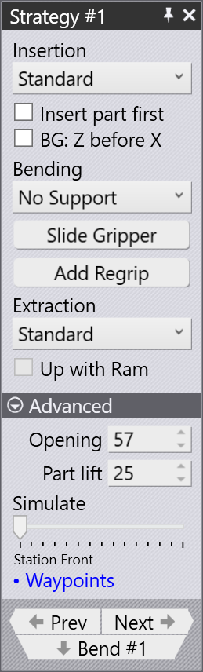
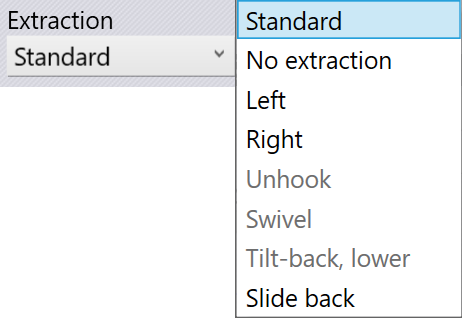
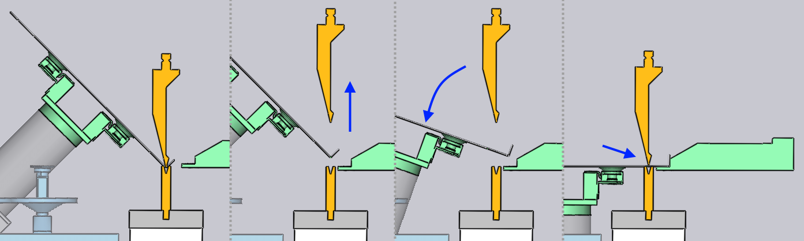

Strategie-Panel

Über das Bedienfeld Robot Strategy steuern Sie die Verarbeitungsstrategie für jede Phase des Biegevorgangs. Hier legen Sie fest, wie der Roboter das Werkstück einlegt, den Biegevorgang ausführt und das Werkstück entnimmt. Für jede Phase können Sie eine Strategie und die zugehörigen Einstellungen festlegen.
Einlegen
Im Abschnitt Insertion des Bedienfelds Robot Strategy legen Sie fest, wie das Werkstück vor dem Spannen und Biegen in die Maschine eingelegt wird.
-
Über die Liste Insertion wählen Sie die Einlegemethode:
-
Standard: Legen Sie das Werkstück gerade von vorne in die Maschine ein.
-
Von links oder von rechts: Schieben Sie das Werkstück seitlich an der Stempel-/Matrizenstation in die Maschine.
-
Werkstück zuerst einlegen
Der normale Einlegevorgang läuft wie folgt ab:

-
Der Hinteranschlag wird einige Millimeter näher an der Biegelinie positioniert, als für die Positionierung des Werkstücks erforderlich.
-
Das Werkstück wird einige Millimeter vor dem Hinteranschlag abgesenkt.
-
Der Roboter schiebt das Werkstück gegen den Hinteranschlag zurück, bis dessen Kontaktsensoren auslösen und anzeigen, dass das Werkstück korrekt positioniert ist. Anschließend beginnt der Biegezyklus.
Wenn ein nach unten gerichteter Flansch positioniert werden muss, ist dies manchmal schwierig: Beim Absenken des Werkstücks könnte der Flansch mit dem Hinteranschlag kollidieren. In solchen Fällen verwendet Flex Cell CAM automatisch die Strategie Insert part first, die wie folgt abläuft:

-
Das Werkstück wird in die Maschine eingeführt und so weit angehoben, dass der nach unten ragende Flansch an der Matrize vorbeigeführt werden kann.
-
Das Werkstück wird über der Matrize abgesenkt und einige Millimeter vor der endgültigen Biegeposition gehalten.
-
Der Hinteranschlag fährt vor und positioniert sich – wie zuvor – einige Millimeter näher an der Biegelinie, als für die Positionierung des Werkstücks erforderlich.
-
Der Roboter schiebt das Werkstück nun einige Millimeter zurück, bis die Kontaktsensoren des Hinteranschlags auslösen. Anschließend wird gebogen.
Flex Cell CAM wählt diese Strategie bei Bedarf automatisch aus. Sie können die automatische Auswahl jedoch überschreiben, indem Sie diese Option aktivieren.
BG: Z vor X
Die Strategie BG: Z before X sorgt für einen sichereren Bewegungsablauf des Hinteranschlags, wenn die Messposition für die aktuelle Biegung näher an der Biegelinie liegt als die Messposition der vorherigen Biegung. Nach dem Wechsel zum nächsten Biegeschritt fahren die Hinteranschläge normalerweise direkt von der vorherigen zur neuen Messposition.
Wenn diese Checkbox aktiviert ist, fahren die Hinteranschläge zunächst in Z-Richtung, bis sie direkt hinter ihren Endpositionen ausgerichtet sind. Anschließend bewegen sie sich in X-Richtung nach vorne an ihre Position. Dadurch wird eine mögliche Kollision vermieden, die bei einer diagonalen Bewegung auftreten könnte.
Flex Cell CAM wählt diese Strategie bei Bedarf automatisch aus. Sie können die automatische Auswahl hier jedoch überschreiben.
Biegen

Ohne Abstützung: Dies ist die Standardstrategie. Während des Biegevorgangs gibt der Greifer das Werkstück frei. Er wartet, bis der Biegevorgang abgeschlossen ist, fährt dann nach oben und greift das Werkstück erneut.
Greifer verschieben: Mit dieser Option wird die Position des Greifers während des Biegevorgangs angepasst, um das Werkstück während des gesamten Biegezyklus korrekt auszurichten und abzustützen.
Umgreifen hinzufügen: Mit der Schaltfläche Umgreifen hinzufügen fügen Sie einen Umgreifvorgang hinzu. Dadurch können Sie die Position und Ausrichtung des Greifers ändern oder bei komplexen Sequenzen mit mehreren Biegungen auf eine andere Greifebene wechseln. Ausführliche Informationen zum Umgreifen finden Sie im Abschnitt Umgreifen.
Entnahme

Nach Abschluss des Biegevorgangs muss das Werkstück zwischen Stempel und Matrize herausgenommen werden, damit es für die nächste Biegung bereit ist. Über die Liste Extraction können Sie eine der verschiedenen Entnahmestrategien wählen. Im Folgenden werden sie kurz erläutert.
Flex Cell CAM wählt abhängig von der Werkstückgeometrie automatisch eine dieser Strategien aus, um Kollisionen zu vermeiden. Mit den Einstellungen in diesem Abschnitt können Sie den Entnahmealgorithmus überschreiben oder die Parameter des ausgewählten Algorithmus anpassen.
-
Standard: Das Standardverfahren wird verwendet, wenn das Werkstück zur Vorbereitung auf die nächste Biegung entnommen und gewendet oder gedreht werden muss.

-
No Extraction: Liegt die nächste Biegung nahe an der gerade ausgeführten, verläuft sie ungefähr parallel dazu und erfolgt sie in derselben Biegerichtung, muss das Werkstück nicht entnommen und erneut eingelegt werden. Stattdessen schwenkt es einfach um die Z-Achse in die Position für die nächste Biegung, wie in der folgenden Abfolge dargestellt.

-
Left / Right: Eine direkte Entnahme nach hinten ist manchmal schwierig, wenn der Pressbalken nicht weit genug geöffnet werden kann oder tiefe Flansche des Werkstücks sich mit dem gekröpften Werkzeug verhaken, wie in der Abbildung unten dargestellt.
Mit dieser Strategie wird das Werkstück nach links oder rechts entnommen. Der Parameter Side shift steuert die seitliche Verschiebung des Werkstücks (in Z-Richtung) vor der Entnahme.

-
Slide back: Diese Strategie kann bei hohen Flanschen hilfreich sein. Vor der Entnahme wird das Werkstück mithilfe des Parameters Slide nach hinten und unten verschoben.

Erweitert

Im Abschnitt Advanced des Panels stehen folgende Parameter zur Verfügung:
-
Die Einstellung Opening steuert die Pressbalkenöffnung[1] nach dem Biegen.
-
Zu Beginn der Entnahme hebt die Einstellung Part lift das Werkstück aus der Parkposition auf der Matrize an, bevor die Entnahme fortgesetzt wird.
-
Mit dem Schieberegler Simulate am unteren Rand des Panels können Sie in der Simulation des Biegezyklus vor- und zurückblättern und so die Auswirkungen Ihrer Änderungen überprüfen. Jede Änderung am Strategy-Panel aktualisiert die Simulation sofort; zugleich werden alle Kollisionsprüfungen in Echtzeit ausgeführt und aktualisiert. Der Schieberegler zeigt außerdem die aktuelle Phase des Biegevorgangs an. In diesem Beispiel befindet sich die Simulation in der Phase Lower to Die.
-
Über den Link Waypoints gelangen Sie zum Panel Wegpunkte, in dem Sie die Bewegungsbahn des Roboters während des Biegeprozesses präzise festlegen können.